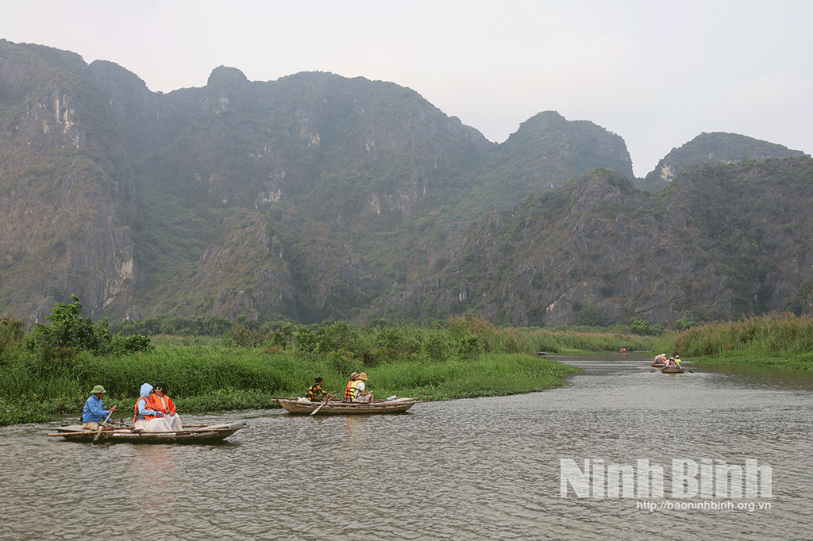
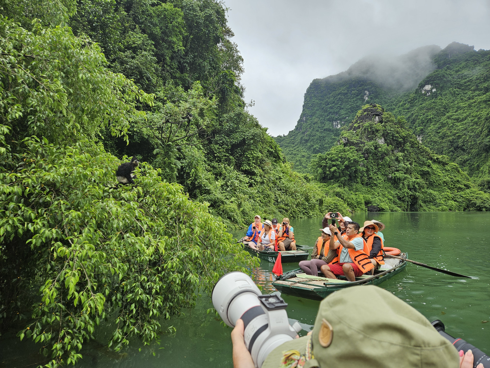
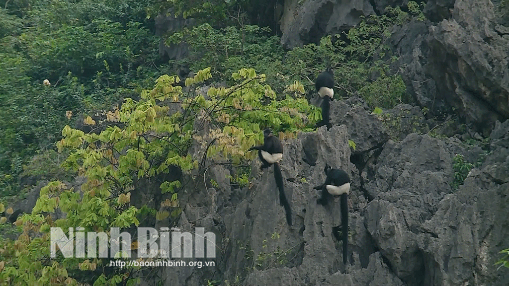
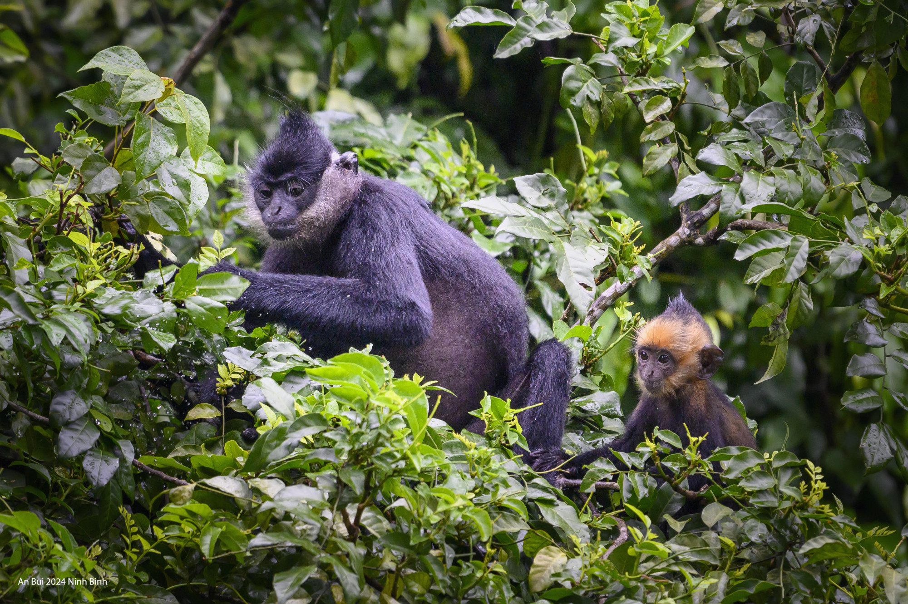
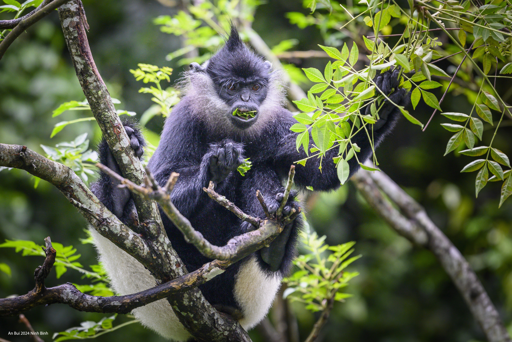

為保護珍稀靈長類動物白臀葉猴所做的努力。
白臀葉猴是罕見的特有靈長類動物，列入越南及全球紅皮書。范朗濕地自然保護區是這種動物在全國最集中且最有人居住的地方。因此，這裡的保育工作受到各部門與層級的關注，有助於保護野生動物免於滅絕風險。
范朗潟湖面積達3,500公頃，是北部三角洲最大的濕地自然保護區。這裡的動植物非常豐富多樣，擁有11個生態系統，超過700種高等植物，近40種動物，43種魚類，38種爬行動物及數百種鳥類。特別是，越南紅皮書中列有多種稀有物種。此外，擁有32個具有許多壯觀岬角的洞穴，使范朗的自然景觀呈現出原始且獨特的特色，也進一步證明這裡的環境得以完整保存，成為白臀葉猴的理想棲息地——這是越南及以上地區極為罕見的靈長類動物之一世界。

凡龍濕地自然保護區擁有豐富多元的生態系。
親眼目睹白臀葉猴在樹枝和岩石間移動，許多遊客對壯麗的自然景觀以及這裡動植物的多樣性與生機表達了興趣。
英國遊客亨利·瓦霍爾先生說：我們的代表團首次來到這裡，對這裡純淨的自然和新鮮空氣感到相當驚艷。當船夫帶我們靠近山脈時，我們一行人看到非常美麗的白臀葉猴。這一切都造就了一幅很棒的畫面，也顯示這裡的保育工作做得很妥當。

遊客在導覽期間喜歡拍攝白臀葉猴。
白臀葉猴的學名是Trachypithecus
delacouri。這種罕見靈長類動物在4至5歲時達到成年，體重可達8.1至9公斤。這些群落仍然肥沃，若受到良好保護，葉猴族群能夠恢復並繁榮。牠們在春季有集中的繁殖季節，從一月到三月，且只產下一隻幼崽。
根據研究人員的說法，白臀葉猴常常能深入山區覓食。主要食物是樹芽、葉子和果實。在陡峭的石灰岩懸崖上，牠們常偏好在清晨或傍晚時段曝曬在陽光下。由於這裡是安全的棲息地，它能抵抗可能攻擊白臀葉猴的天敵。

遊客在導覽期間喜歡拍攝白臀葉猴。

